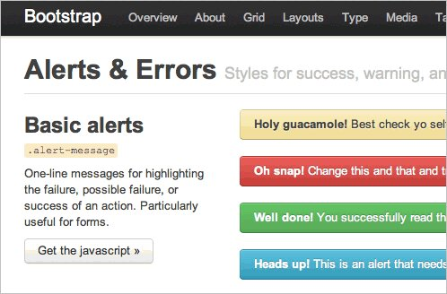
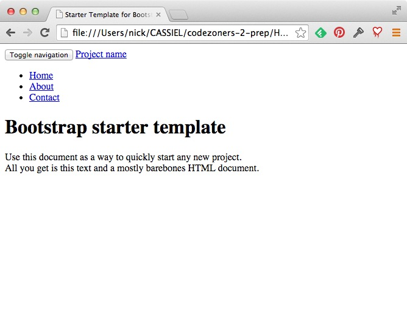

Bootstrap is a front-end tool set for building web applications
Front-end means running in the browser, not the server.)
(Source: http://www.stance.com/)
(1) Load from a CDN
<!-- Latest compiled and minified CSS -->
<link rel="stylesheet" href="https://maxcdn.bootstrapcdn.com/bootstrap/3.2.0/css/bootstrap.min.css">
<!-- Optional theme -->
<link rel="stylesheet" href="https://maxcdn.bootstrapcdn.com/bootstrap/3.2.0/css/bootstrap-theme.min.css">
<!-- Latest compiled and minified JavaScript -->
<script src="https://maxcdn.bootstrapcdn.com/bootstrap/3.2.0/js/bootstrap.min.js"></script>(2) Download a precompiled copy
bootstrap/
├── css/
│ ├── bootstrap.css
│ ├── bootstrap.min.css
│ ├── bootstrap-theme.css
│ └── bootstrap-theme.min.css
├── js/
│ ├── bootstrap.js
│ └── bootstrap.min.js
└── fonts/
├── glyphicons-halflings-regular.eot
├── glyphicons-halflings-regular.svg
├── glyphicons-halflings-regular.ttf
└── glyphicons-halflings-regular.woffhttp://getbootstrap.com/examples/starter-template/http://getbootstrap.com/examples/navbar/http://getbootstrap.com/examples/grid/http://getbootstrap.com/examples/theme/http://getbootstrap.com/examples/jumbotron/http://getbootstrap.com/examples/carousel/http://getbootstrap.com/examples/starter-template/<head>
<meta charset="utf-8">
<meta http-equiv="X-UA-Compatible" content="IE=edge">
<meta name="viewport" content="width=device-width, initial-scale=1">
<meta name="description" content="">
<meta name="author" content="">
<link rel="icon" href="../../favicon.ico">
<title>Starter Template for Bootstrap</title>
<!-- Bootstrap core CSS -->
<link href="../../dist/css/bootstrap.min.css" rel="stylesheet">
<!-- Custom styles for this template -->
<link href="starter-template.css" rel="stylesheet">
</head>Note the relative paths (favicon, CSS).
<div class="navbar navbar-inverse navbar-fixed-top" role="navigation">
<div class="container">
<div class="navbar-header">
<button type="button" class="navbar-toggle collapsed" data-toggle="collapse" data-target=".navbar-collapse">
<span class="sr-only">Toggle navigation</span>
<span class="icon-bar"></span>
<span class="icon-bar"></span>
<span class="icon-bar"></span>
</button>
<a class="navbar-brand" href="#">Project name</a>
</div>
<div class="collapse navbar-collapse">
<ul class="nav navbar-nav">
<li class="active"><a href="#">Home</a></li>
<li><a href="#about">About</a></li>
<li class="dropdown">
<a class="dropdown-toggle" data-toggle="dropdown" href="#">Drop-down <span class="caret"></span></a>
<ul class="dropdown-menu">
<li><a href="#">Item 1</a></li>
<li><a href="#">Item 2</a></li>
<li><a href="#">Item 3</a></li>
</ul>
</li>
<li><a href="#contact">Contact</a></li>
</ul>
</div><!--/.nav-collapse -->
</div>
</div><div class="container">
<div class="starter-template">
<h1>Bootstrap starter template</h1>
<p class="lead">Use this document as a way to quickly start any new project.<br> All you get is this text and a mostly barebones HTML document.</p>
</div>
</div><!-- /.container --><!-- Bootstrap core JavaScript
================================================== -->
<!-- Placed at the end of the document so the pages load faster -->
<script src="https://ajax.googleapis.com/ajax/libs/jquery/1.11.1/jquery.min.js"></script>
<script src="../../dist/js/bootstrap.min.js"></script>
<!-- IE10 viewport hack for Surface/desktop Windows 8 bug -->
<script src="../../assets/js/ie10-viewport-bug-workaround.js"></script>Relative paths (again).
http://getbootstrap.com/examples/navbar/The Navbar is responsive.
(The document is modified with Javascript.)
http://getbootstrap.com/css/#overview-containerPlace the entire content within a container element
<div class="container">
...
</div>The container supports Bootstrap's grid system
Can you fix up the starter template to correct the appearance?
(Firefox (and Chrome) are your friends - look at the console output.)
(...README...)
http://getbootstrap.com/css/#grid<div class="row">
<div class="col-md-8">.col-md-8</div>
<div class="col-md-4">.col-md-4</div>
</div>
<div class="row">
<div class="col-md-4">.col-md-4</div>
<div class="col-md-4">.col-md-4</div>
<div class="col-md-4">.col-md-4</div>
</div>
<div class="row">
<div class="col-md-6">.col-md-6</div>
<div class="col-md-6">.col-md-6</div>
</div>All rows are 12 columns wide
Rows will stack on smaller devices
<div class="row">
<div class="col-md-4">.col-md-4</div>
<div class="col-md-4 col-md-offset-4">.col-md-4 .col-md-offset-4</div>
</div>
<div class="row">
<div class="col-md-3 col-md-offset-3">.col-md-3 .col-md-offset-3</div>
<div class="col-md-3 col-md-offset-3">.col-md-3 .col-md-offset-3</div>
</div>
<div class="row">
<div class="col-md-6 col-md-offset-3">.col-md-6 .col-md-offset-3</div>
</div>.col-md-offset-* (or -lg-, ...) moves columns to the right
Use .container-fluid for full-width containers
<div class="container-fluid">
<div class="row">
...
</div>
</div>Can you create these patterns using Bootstrap's Grid?